# Libraries
# Modeling
library(cmdstanr)
library(brms)
#if (!require('priorsense')) remotes::install_github('n-kall/priorsense');
#library(priorsense)
options(brms.backend='cmdstanr')
options(brms.file_refit='on_change')
library(loo)
# Visualizations
library(knitr)
library(dplyr)
library(tidyr)
library(ggplot2)
library(GGally)
library(cowplot)
library(gridExtra)
library(reshape2)
library(bayesplot)
if (!require('viridis')) install.packages('viridis');
library(viridis)Predicting Voter Turnouts
1. Introduction
Text
2. Data Exploration
The dataset consists of county-level information on voter turnout and demographics. The variables are:
turnout_est: Voter turnout estimate, measured as a ratio of number of votes and citizen voting age population (CVAP)elderly_prop: Share of elderly peoplewhite_cvap_prop: Share of white CVAPbsc_prop: Share of population with a bachelor’s degreepoverty_prop: Poverty percentage on a scale \([0, 1]\)median_hh_income: Median household income
Each observation is identified with a unique FIPS code. The first \(6\) rows of the dataset:
# Set up directories
parent_dir <- dirname(getwd())
data_path <- file.path(parent_dir, 'data', 'data_preprocessed.csv')
# Load dataset
df <- read.csv(data_path, header=TRUE, sep=';')
kable(head(df[,1:7]))| county_fips | turnout_est | elderly_prop | white_cvap_prop | bsc_prop | poverty_prop | median_hh_income |
|---|---|---|---|---|---|---|
| 1001 | 0.6618208 | 0.1588062 | 0.7623928 | 0.2813147 | 0.112 | 67565 |
| 1003 | 0.6529095 | 0.2128472 | 0.8631425 | 0.3245029 | 0.089 | 71135 |
| 1005 | 0.5402157 | 0.2018429 | 0.4912686 | 0.1115310 | 0.255 | 38866 |
| 1007 | 0.5456355 | 0.1729252 | 0.7517771 | 0.1191381 | 0.178 | 50907 |
| 1009 | 0.6418799 | 0.1863896 | 0.9212424 | 0.1490361 | 0.131 | 55203 |
| 1011 | 0.5906530 | 0.1717172 | 0.2483995 | 0.1169114 | 0.308 | 33124 |
First, a \(90/10\) split is performed on the dataset to create a training and test datasets:
set.seed(100)
train_idx <- sort(sample.int(n=nrow(df), size=floor(0.9*nrow(df)), replace=F))
df_train <- df[train_idx, ]
df_test <- df[-train_idx, ]To get familiar with the properties of each variable, their histograms are plot:
# Histograms
df_train %>%
pivot_longer(cols = 2:7) %>%
ggplot(aes(value)) +
geom_histogram(color = '#000000', fill = '#797979', bins=40) +
facet_wrap(~name, scales = 'free') +
theme_minimal()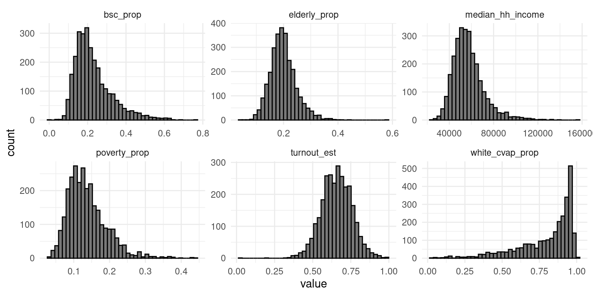
sum_table <- do.call(cbind, lapply(df_train[,2:7], summary, 1))
kable(sum_table)| turnout_est | elderly_prop | white_cvap_prop | bsc_prop | poverty_prop | median_hh_income | |
|---|---|---|---|---|---|---|
| Min. | 0.0355451 | 0.0461538 | 0.0163331 | 0.0000000 | 0.0300000 | 22901.00 |
| 1st Qu. | 0.5909990 | 0.1673143 | 0.7029935 | 0.1617052 | 0.0990000 | 47850.75 |
| Median | 0.6587178 | 0.1950109 | 0.8761868 | 0.2060993 | 0.1280000 | 55208.00 |
| Mean | 0.6572337 | 0.1987913 | 0.8007335 | 0.2304250 | 0.1373583 | 57337.90 |
| 3rd Qu. | 0.7267506 | 0.2244907 | 0.9432212 | 0.2737591 | 0.1650000 | 63893.00 |
| Max. | 0.9975460 | 0.5841379 | 1.0000000 | 0.7630406 | 0.4390000 | 155362.00 |
Most of the voter turnout estimates are concentrated around the range \((0.5, 0.75)\). The variable white_cvap_prop stands out from other independent variables due to its strong negative skewness, fat tail and relatively high mode. median_hh_income is the only variable not measured on the scale \([0,1]\).
Correlation coefficients reveal that all variables except poverty_prop are positively correlated with voter turnout, as expected. median_hh_income and poverty_prop appear to largely measure the same phenomenon: They are strongly negatively correlated, and their scatter plots against voter turnout essentially mirror each other. Out of these two, poverty_prop is kept, as I find it more easily interpretable.
ggpairs(df_train, columns = 2:7, progress = FALSE) +
theme_minimal(base_size=8)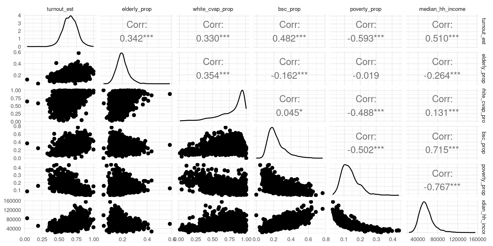
3. Modeling Approach
Beta regression
To model voter turnouts as a function of demographic variables, beta regression is used. The main reason for this choice is that in beta regression it is assumed that the dependent variable follows a beta distribution, which a reasonable assumption for this problem: Similarly to voter turnout, beta distributed random variables are continuous, and they can take any value between \(0\) and \(1\). (Strictly speaking voter turnout can also equal \(0\) or \(1\), whereas a beta distributed random variable cannot. However, the dataset used here does not contain such values.) In addition, beta distribution are flexible, allowing many kinds of shapes for the distribution.
A beta regression model is formulated as follows: The dependent variable \(y\) is assumed to be beta distributed with parameter values \(\mu\) and \(\phi\):
\[ y \sim \text{Beta}(\mu, \phi) \] These parameters are not the standard scale parameters \(\alpha\) and \(\beta\), but transformations of them. \(mu = \alpha/(\alpha+\beta)\) is called the parameter, as it equals the expected value of \(y\). \(\phi = \alpha+\beta\) is the parameter, measuring the level of dispersion of the distribution: A larger value indicates less dispersion.
Assuming there are \(N\) observations, where \(\bf{x}\) are the variables used to explain \(\mu\) and \(\bf{z}\) to explain \(\phi\), then for every \(i=1,...,N\):
\[ y_i \sim \text{Beta}(\mu_i, \phi) \] where \[ g_1 (\mu_i) = \bf{x}_i^T\beta \]
and
\[ g_2 (\phi_i) = \bf{z}_i^T\gamma \] where \(\beta\) and \(\gamma\) are vectors of intercepts and coefficients. \(g_1(\cdot)\) and \(g_2(\cdot)\) are link functions, whose main task is to map \(\mu \in (0, 1)\) and \(\phi > 0\) on real line. Common choices for link functions are logit for the former, and log for the latter.
Test run with default priors
To test the suitability of beta regression for the research problem, a simple model with one explaining variable and default priors is tested. Logit and log are the link functions.
As poverty_prop has strongest correlation with voter turnout, it will be used for explaining \(logit(\mu_i)\) variable. The precision parameter is explained with white_cvap_prop based on its perceived association with the spread of voter turnout values, based on the scatter plots.
# Model formula
model_path_simple <- file.path(parent_dir, 'models', 'fit_simple')
formula_simple <- bf(turnout_est ~ poverty_prop,
phi ~ white_cvap_prop)
# Fit the model
fit_simple <- brms::brm(
formula = formula_simple,
data = df_train,
family = Beta(),
chains = 4,
iter = 1000,
warmup = 500,
seed = 100,
file = model_path_simple,
silent = 0
)Four chains and 1000 iterations with 500 warm up steps were used to sample posteriors. According to trace plots, the MCMC converged: The chains are exploring the same region without obvious trends or autocorrelation.
mcmc_trace(fit_simple, regex_pars='b_')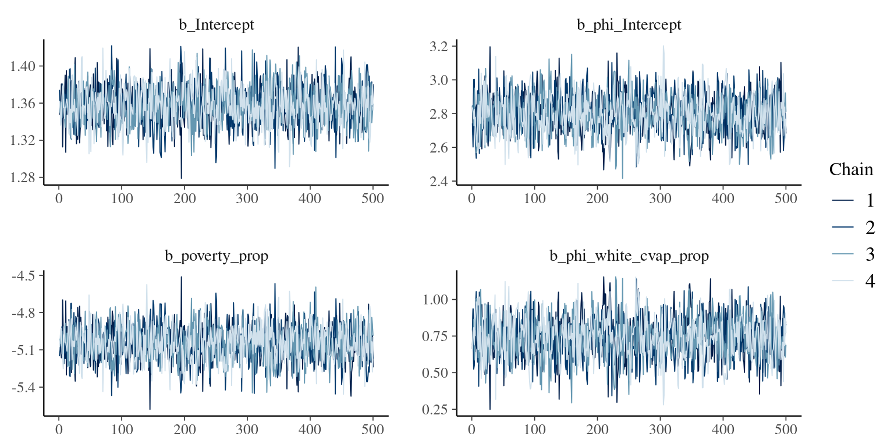
pp_check(fit_simple, ndraws=10)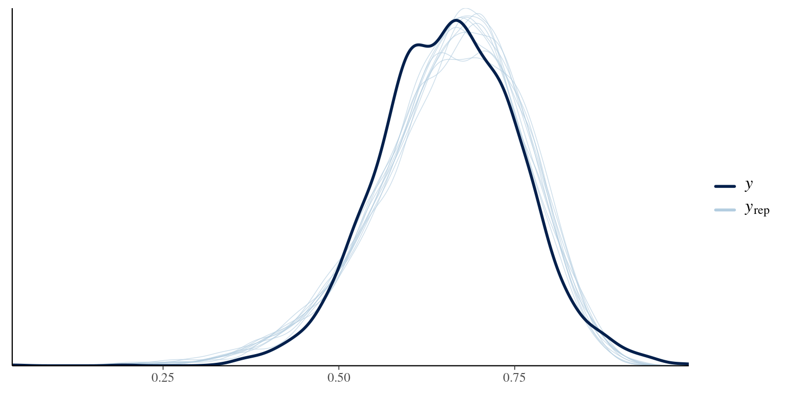
4. Prior selection
Priors for mean parameter coefficients
According to US Elections project, the voter turnout measured against voter eligible population (VEP) was approximately 60% in 2016 presidential elections. This measure is slightly different from the measure used in the data, as VEP excludes adult citizens not eligible to vote, such as felons in some states. In spite of this difference, we will use it as a starting point for choosing priors for the intercept and coefficients \(\beta\) in \(g_1(\mu_i) = \bf{x}_i^T\beta\). A logit link function will be used. It follows that \(\mu_i = (1+\exp(-\bf{x}_i^T\beta))^{-1}\).
The prior for intercept is:
b_Intercept- Normal prior \(N(0.4, 3)\)
The reason for this choice is that if the coefficients are zero, the mean parameters are assumed to be \(0.6 = (1+\exp(-0.4))^{-1}\), and variance \(1.5\) expresses uncertainty about the true value.
For independent variables, the following priors are used:
b_poverty_prop- Normal prior \(N(-1, 1.5)\)
b_bsc_prop- Normal prior \(N(0.5, 1.5)\)
b_elderly_prop- Normal prior \(N(0.5, 1.5)\)
b_white_cvap_prop- Normal prior \(N(0.5, 1.5)\)
In the other words, we assume poverty to have a negative effect on voter turnout, and share of population with a bachelor’s degree, share of white CVAP and share of elderly people a positive effect on voter turnout. The absolute value for prior mean of the coefficient for poverty_prop expresses the belief that poverty percentage has a stronger effect on mean than the rest of the variables.
After logistic transformations, it can be seen that the intercept assigns most of the density around values \((0.4, 0.8)\) and less on extreme values, which is what we wanted. Coefficients for white_cvap_prop, bsc_prop and elderly_prop put slightly more density for larger mean values, and poverty_prop for smaller values.
df_norm1 <-
data.frame(
norm1 <- plogis(rnorm(n=1000,mean=0.4, sd=sqrt(1.5))),
norm2 <- plogis(rnorm(n=1000,mean=-1, sd=sqrt(1.5))),
norm3 <- plogis(rnorm(n=1000,mean=0.5, sd=sqrt(1.5)))
)
norm_plot1 <- ggplot(df_norm1, aes(x=norm1)) + geom_histogram(bins = 20) +
xlab('intercept') + theme_minimal()
norm_plot2 <- ggplot(df_norm1, aes(x=norm2)) + geom_histogram(bins = 20) +
xlab('poverty') + theme_minimal()
norm_plot3 <- ggplot(df_norm1, aes(x=norm3)) + geom_histogram(bins = 20) +
xlab('white, bsc., elderly') + theme_minimal()
plot_grid(norm_plot1, norm_plot2, norm_plot3, nrows=1,
labels = c('N(0.4, 1.5)', 'N(-1, 1.5)', 'N(0.5, 1.5)'),
label_fontface = 'plain')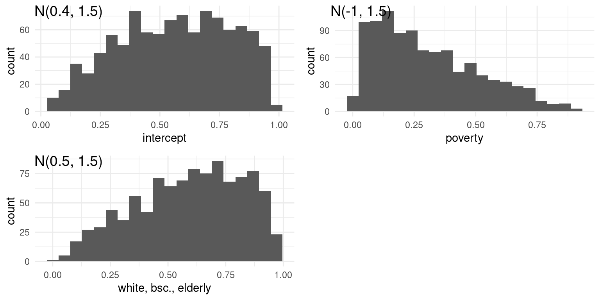
Priors for precision parameter coefficients
For precision parameter regression coefficients \(\gamma\), exponential link function is used: \(\log(\phi_i) = \bf{z}_i^T\gamma\). I do not have any strong belief for their priors. Instead, the main goal of the priors is to assign sufficient amount of density for wide range of values while assigning less density for unrealistically large and small values. The priors are:
b_phi_Intercept- \(N(1.8, 1.5)\)
b_phi_white_cvap_prop,b_phi_elderly_prop,b_phi_poverty_prop,b_phi_white_cvap_prop- \(N(0, 1.5)\)
where zero means of the coefficient priors expresses the idea that the effect of independent variables on voter turnout is unknown. The idea here is that \(\phi_i = \exp(1.8) \approx 6\), results in a somewhat realistic distribution of voter turnout, with most of the mass around moderate values, and less around the tails:
ggplot() +
stat_function(fun = dbeta, args = list(shape1 = 3.6, shape2 = 2.4)) +
ggtitle('alpha = 3.6, beta = 2.4, phi = 6') +
theme_minimal()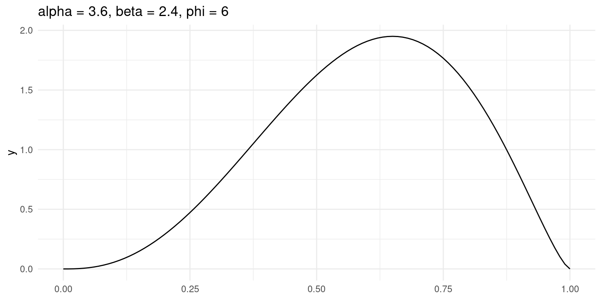
After exponential transformation, the prior distributions put most of the density for values less than \(10\). However, they still give some density for large values:
df_norm2 <-
data.frame(
norm1 <- exp(rnorm(n=1000,mean=1.8, sd=sqrt(1.5))),
norm2 <- exp(rnorm(n=1000,mean=0, sd=sqrt(1.5)))
)
norm_plot5 <- ggplot(df_norm2, aes(x=norm1)) + geom_histogram(bins = 40) +
xlab('intercept') + theme_minimal() + xlim(0, 40) + ylim(0, 280)
norm_plot6 <- ggplot(df_norm2, aes(x=norm2)) + geom_histogram(bins = 40) +
xlab('Coefficients') + theme_minimal() + xlim(0, 40) + ylim(0, 280)
plot_grid(norm_plot5, norm_plot6, nrows=1,
labels = c('N(1.8, 1.5)', 'N(0, 1.5)'),
label_fontface = 'plain')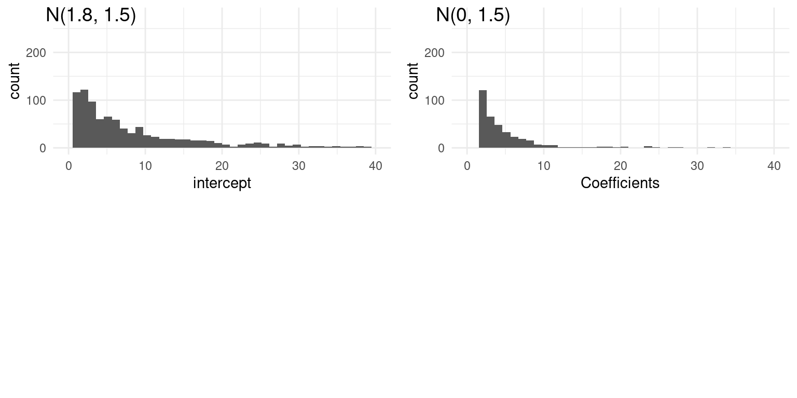
Prior predictive check
The performance of priors is assessed with prior predictive check. Here, every independent variable is used to explain both of the mean and precision parameter.
model_path_prior_1 <- file.path(parent_dir, 'models', 'fit_prior_1')
# Priors
prior_1 <- c(
# Mean coefficients
prior(normal(0.4, 1.5), class='Intercept'),
prior(normal(-1, 1.5), class='b', coef='poverty_prop'),
prior(normal(0.5, 1.5), class='b', coef='bsc_prop'),
prior(normal(0.5, 1.5), class='b', coef='elderly_prop'),
prior(normal(0.5, 1.5), class='b', coef='white_cvap_prop'),
# Phi coefficients
prior(normal(1.8, 1.5), class='Intercept', dpar='phi'),
prior(normal(0, 1.5), class='b', coef='poverty_prop', dpar='phi'),
prior(normal(0, 1.5), class='b', coef='bsc_prop', dpar='phi'),
prior(normal(0, 1.5), class='b', coef='elderly_prop', dpar='phi'),
prior(normal(0, 1.5), class='b', coef='white_cvap_prop', dpar='phi')
)
# Model formula
formula_prior_1 <- bf(turnout_est ~ poverty_prop + elderly_prop + white_cvap_prop
+ bsc_prop,
phi ~ poverty_prop + elderly_prop + white_cvap_prop
+ bsc_prop)
# Fit the model
fit_prior_1 <- brms::brm(
formula = formula_prior_1,
prior = prior_1,
data = df_train,
family = Beta(),
chains = 4,
iter = 2000,
warmup = 1000,
seed = 100,
file = model_path_prior_1,
silent = 0,
sample_prior = 'only'
)Trace plot indicate a successful MCMC:
mcmc_trace(fit_prior_1, regex_pars='b_')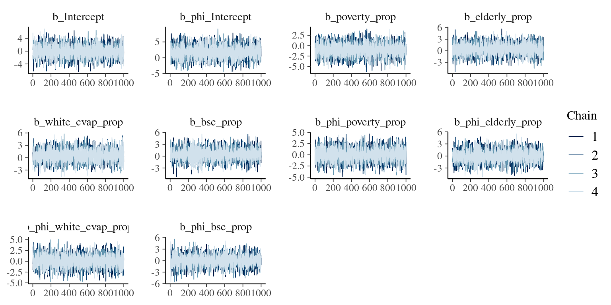
There is a lot of variation between the prior predictive draws: While some of the draws show realistically moderate values, others show a lot of predictions close to the extreme ends.
yrep_prior_1 <- posterior_predict(fit_prior_1, draws = 100)
ppd_dens_overlay(yrep_prior_1[1:100, ]) + xlim(0, 1) + ylim(0, 10)Warning: Removed 175 rows containing missing values (`geom_line()`).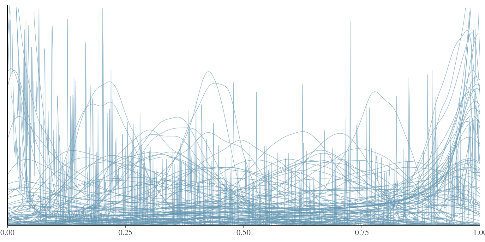
To reduce the variation between the draws and to get more realistic prior predictive draws, dispersions of the priors are reduced. However, I do not want to use too tight priors to avoid prior-data conflict. For this reason, student’s t-priors with \(7\) degrees of freedom and scale \(1\) are used, as it allows fatter tails compared to normal priors. An illustration how such prior with mean \(0\) would differ from \(N(0, 1.5)\):
ggplot(data.frame(x = c(-8, 8)), aes(x = x)) +
stat_function(fun = dnorm, args=list(sd=1.5)) +
stat_function(fun=dt, args=list(df=7), color='blue') +
ggtitle('N(0, 1.5) vs. t(df=7, 0, 1)') +
theme_minimal()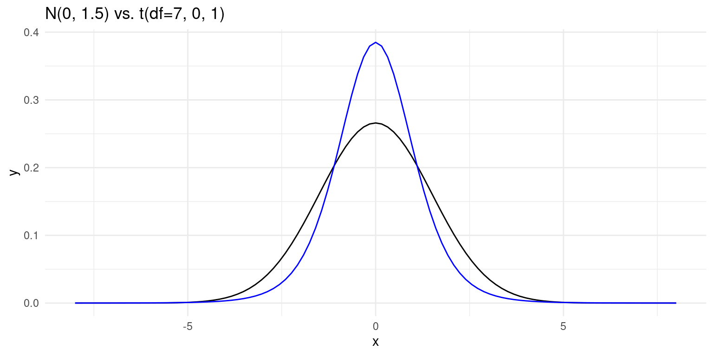
model_path_prior_2 <- file.path(parent_dir, 'models', 'fit_prior_2')
# Priors
prior_2 <- c(
# Mean coefficients
prior(student_t(7, 0.4, 1), class='Intercept'),
prior(student_t(7, -1, 1), class='b', coef='poverty_prop'),
prior(student_t(7, 0.5, 1), class='b', coef='bsc_prop'),
prior(student_t(7, 0.5, 1), class='b', coef='elderly_prop'),
prior(student_t(7, 0.5, 1), class='b', coef='white_cvap_prop'),
# Phi coefficients
prior(student_t(7, 1.8, 1), class='Intercept', dpar='phi'),
prior(student_t(7, 0, 1), class='b', coef='poverty_prop', dpar='phi'),
prior(student_t(7, 0, 1), class='b', coef='bsc_prop', dpar='phi'),
prior(student_t(7, 0, 1), class='b', coef='elderly_prop', dpar='phi'),
prior(student_t(7, 0, 1), class='b', coef='white_cvap_prop', dpar='phi')
)
# Fit the model
fit_prior_2 <- brms::brm(
formula = formula_prior_1,
prior = prior_2,
data = df_train,
family = Beta(),
chains = 4,
iter = 2000,
warmup = 1000,
seed = 100,
file = model_path_prior_2,
silent = 0,
sample_prior = 'only'
)The resulting prior predictive draws are now more realistic: More density is assigned on moderate values and less on extreme values.
yrep_prior_2 <- posterior_predict(fit_prior_2, draws = 100)
ppd_dens_overlay(yrep_prior_2[1:100, ]) + xlim(0, 1) + ylim(0, 10)Warning: Removed 33 rows containing missing values (`geom_line()`).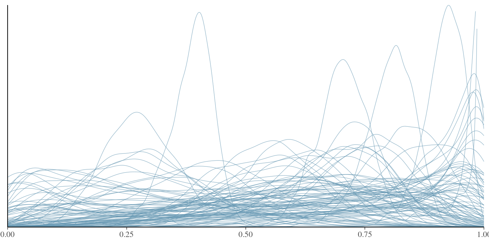
5. Model fitting
After choosing the priors, it is time to fit the model(s) to the data. Four models are fit, where the number of explaining variables is incremented by one for each model: The idea here is to start from a simple model, and step by step increase its complexity by adding more predictors. For each model, the explaining variables are same for both mean and precision parameters.
Model 1
The only explaining variable for the first model is poverty_prop, as based on data exploration it is assumed to explain the voter turnout most. The linear predictor function for the logit mean parameter is:
\[ \text{logit}(\mu_i) = \beta_{\text{intercept}} + \beta_{\text{poverty_prop}}\cdot \text{poverty_prop}_i \] and for the precision parameter: \[ \text{log}(\phi_i) = \gamma_{\text{intercept}} + \gamma_{\text{poverty_prop}}\cdot \text{poverty_prop}_i \] The model is fit with four chains and \(2000\) iterations, half of them for warm-up:
model_path_m1 <- file.path(parent_dir, 'models', 'fit_m1')
# Priors
prior_m1 <- c(
# Mean coefficients
prior(student_t(7, 0.4, 1), class='Intercept'),
prior(student_t(7, -1, 1), class='b', coef='poverty_prop'),
# Phi coefficients
prior(student_t(7, 1.8, 1), class='Intercept', dpar='phi'),
prior(student_t(7, 0, 1), class='b', coef='poverty_prop', dpar='phi')
)
# Model formula
formula_m1 <- bf(turnout_est ~ poverty_prop,
phi ~ poverty_prop)
# Fit the model
fit_m1 <- brms::brm(
formula = formula_m1,
prior = prior_m1,
data = df_train,
family = Beta(),
chains = 4,
iter = 2000,
warmup = 1000,
seed = 100,
file = model_path_m1,
silent = 0
)Trace plots indicate that the chains have converged to the same distributions. R-hat values are below \(1.05\), indicating good level of mixing between the chains. Also the effective sample sizes are large. Based on these metrics MCMC has successfully sampled the posteriors.
mcmc_trace(fit_m1, regex_pars='b_')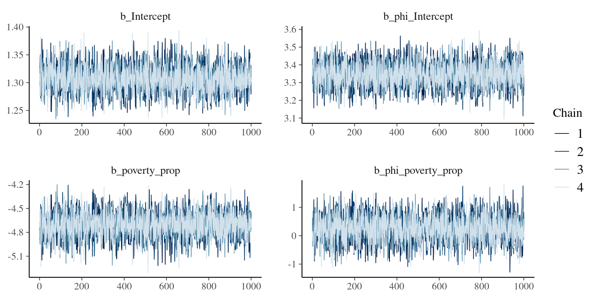
summary(fit_m1) Family: beta
Links: mu = logit; phi = log
Formula: turnout_est ~ poverty_prop
phi ~ poverty_prop
Data: df_train (Number of observations: 2794)
Draws: 4 chains, each with iter = 2000; warmup = 1000; thin = 1;
total post-warmup draws = 4000
Population-Level Effects:
Estimate Est.Error l-95% CI u-95% CI Rhat Bulk_ESS Tail_ESS
Intercept 1.31 0.02 1.26 1.35 1.00 3413 2993
phi_Intercept 3.35 0.07 3.21 3.48 1.00 3516 2994
poverty_prop -4.71 0.16 -5.02 -4.41 1.00 3467 3213
phi_poverty_prop 0.26 0.46 -0.66 1.15 1.00 3507 3121
Draws were sampled using sample(hmc). For each parameter, Bulk_ESS
and Tail_ESS are effective sample size measures, and Rhat is the potential
scale reduction factor on split chains (at convergence, Rhat = 1).The summary statistics also show that poverty percentage has a negative effect on logit mean voter turnout, which is an expected result. Precision is mostly explained by intercept, and uncertainty about its regression coefficient value is higher than for the mean parameter:
mcmc_areas(fit_m1, regex_pars='b_')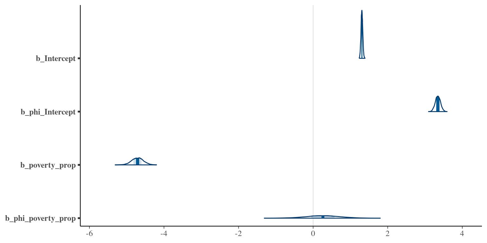
Based on posterior predictive draws, the distributions simulated datasets \(y_{\text{rep}}\) follow the true data voter turnouts \(y\) quite closely. However, the distributions of the predictions are slightly negatively skewed compared to the true turnout values, by underestimating the left ‘bump’ of \(y\) and by putting too much density on the left tail and too little on the right tail.
pp_check(fit_m1, ndraws=20)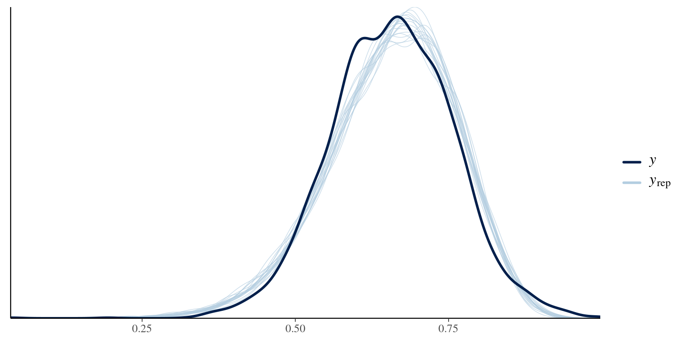
Pointwise comparison of voter turnouts to posterior predictive intervals (\(0.5\) in dark blue, \(0.9\) in light blue) further confirms that the model has problems predicting turnout values close to one.
y_train = df_train$turnout_est
yrep_m1 = posterior_predict(fit_m1)
ppc_intervals(y=y_train, yrep=yrep_m1, fatten=0, prob=0.5, prob_outer=0.9)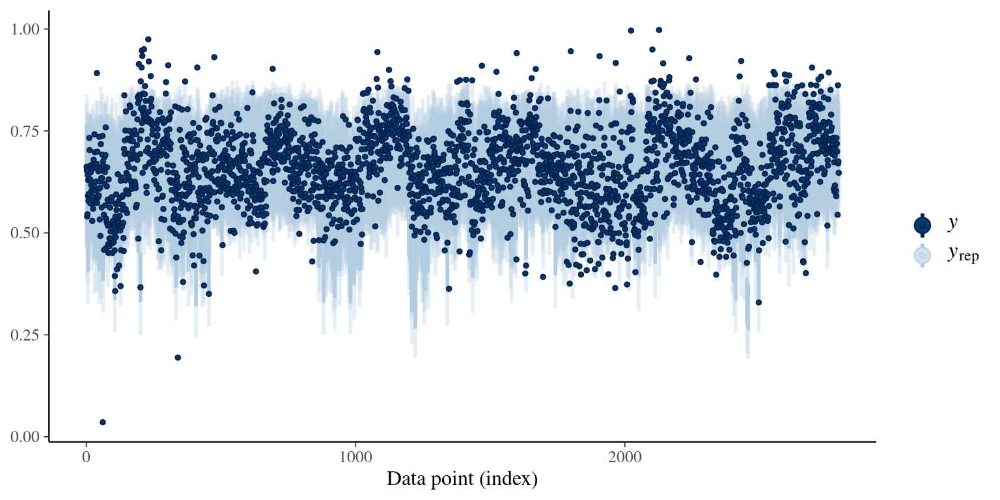
Model 2
Model is extended by adding second predictor variable, bsc_prop.
model_path_m2 <- file.path(parent_dir, 'models', 'fit_m2')
# Priors
prior_m2 <- c(
# Mean coefficients
prior(student_t(7, 0.4, 1), class='Intercept'),
prior(student_t(7, -1, 1), class='b', coef='poverty_prop'),
prior(student_t(7, 0.5, 1), class='b', coef='bsc_prop'),
# Phi coefficients
prior(student_t(7, 1.8, 1), class='Intercept', dpar='phi'),
prior(student_t(7, 0, 1), class='b', coef='poverty_prop', dpar='phi'),
prior(student_t(7, 0, 1), class='b', coef='bsc_prop', dpar='phi')
)
# Model formula
formula_m2 <- bf(turnout_est ~ poverty_prop + bsc_prop,
phi ~ poverty_prop + bsc_prop)
# Fit the model
fit_m2 <- brms::brm(
formula = formula_m2,
prior = prior_m2,
data = df_train,
family = Beta(),
chains = 4,
iter = 2000,
warmup = 1000,
seed = 100,
file = model_path_m2,
silent = 0
)Posterior predictive check shows that the fit is now better:
pp_check(fit_m2, ndraws=20)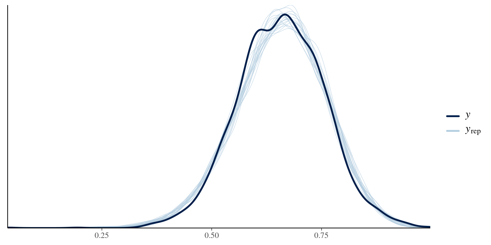
The model still has some problems predicting extreme values, although performance improved.
y_train = df_train$turnout_est
yrep_m2 = posterior_predict(fit_m2)
ppc_intervals(y=y_train, yrep=yrep_m2, fatten=0, prob=0.5, prob_outer=0.9)Model 3
In the last model, all four variables are used to predict voter turnout.
model_path_m3 <- file.path(parent_dir, 'models', 'fit_m3')
# Priors
prior_m3 <- c(
# Mean coefficients
prior(normal(0.4, 1.5), class='Intercept'),
prior(normal(-1, 1.5), class='b', coef='poverty_prop'),
prior(normal(0.5, 1.5), class='b', coef='bsc_prop'),
prior(normal(0.5, 1.5), class='b', coef='elderly_prop'),
prior(normal(0.5, 1.5), class='b', coef='white_cvap_prop'),
# Phi coefficients
prior(normal(1.8, 1.5), class='Intercept', dpar='phi'),
prior(normal(0, 1.5), class='b', coef='poverty_prop', dpar='phi'),
prior(normal(0, 1.5), class='b', coef='bsc_prop', dpar='phi'),
prior(normal(0, 1.5), class='b', coef='elderly_prop', dpar='phi'),
prior(normal(0, 1.5), class='b', coef='white_cvap_prop', dpar='phi')
)
# Model formula
formula_m3 <- bf(turnout_est ~ poverty_prop + bsc_prop + elderly_prop + white_cvap_prop,
phi ~ poverty_prop + bsc_prop + elderly_prop + white_cvap_prop)
# Fit the model
fit_m3 <- brms::brm(
formula = formula_m3,
prior = prior_m3,
data = df_train,
family = Beta(),
chains = 4,
iter = 2000,
warmup = 1000,
seed = 100,
file = model_path_m3,
silent = 0
)pp_check(fit_m3, ndraws=20)y_train = df_train$turnout_est
yrep_m3 = posterior_predict(fit_m3)
ppc_intervals(y=y_train, yrep=yrep_m3, fatten=0, prob=0.5, prob_outer=0.9)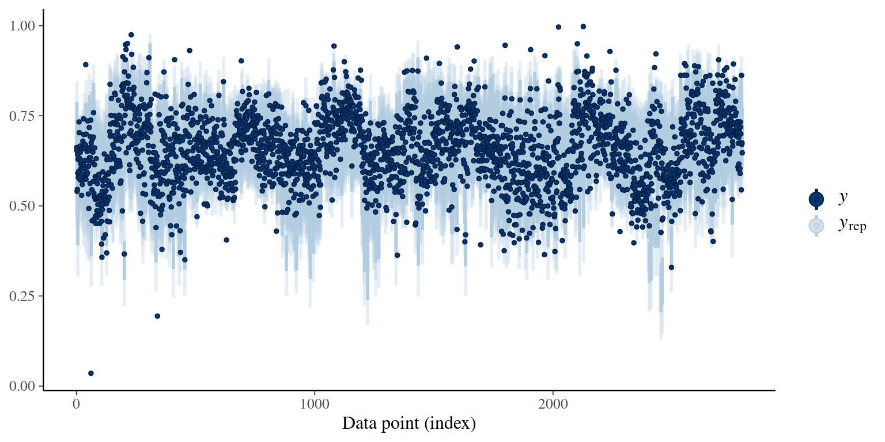